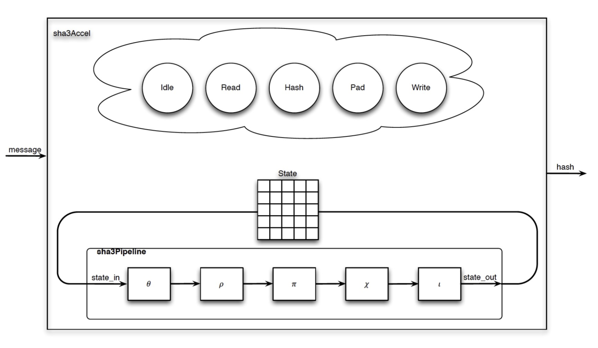

Project Overview
The SHA3 accelerator project is a hardware implementation of the Keccak-256 cryptographic hash function, designed using Chisel. This design processes a single 1088-bit message chunk and produces a secure hash using the Keccak permutation, which operates on a 1600-bit internal state. The accelerator is built in a modular fashion, with separate hardware blocks for the key permutation steps: Theta, RhoPi, and Chi. Each module is individually tested to ensure correctness, and the complete design connects these modules into a single-cycle datapath, managed by a control state machine. The control logic handles input loading, tracks permutation rounds, and coordinates the hashing process using a ready-valid protocol. The accelerator is verified against a provided C reference implementation, with simulation and debugging supported by industry-standard tools such as VCS and GTKWave. This project focuses on correctness and clear structure, providing a foundation for further optimizations and more advanced hardware features in future work.
Background
SHA-3 and Keccak
SHA3 is a family of cryptographic hash functions designed to securely turn any amount of input data into a fixed-size output, called a hash. It is used to check data integrity and for security in digital systems. SHA3 is based on the Keccak algorithm, which was selected as the winner of a competition held by NIST (the National Institute of Standards and Technology) in 2012. Keccak uses a special "sponge" construction: it absorbs input data into a large internal state, repeatedly mixes the state using a series of bitwise operations (like XORs, rotations, and permutations), and then squeezes out the final hash value. This process makes it very hard to reverse the hash or find two different inputs with the same hash, which is important for security. Keccak is the core algorithm behind SHA3, and together they provide a secure way to create digital fingerprints of data.
Why Accelerate?
Simply, SHA3 does a lot of repetitive and tricky bit-level work, which can be slow for a regular computer to do over and over. If we build a special hardware circuit just for SHA3, it can do these jobs much faster. This means we can get results quicker, use less energy, and let the main computer focus on other tasks.
Skills Developed
Accelerator Design Concepts: ParallelismHardware Languages: Beethoven, Chisel
Software Languages: C
Simulation: VCS, GTKWave
FPGA Implementation: Amazon AW2 EC2, Amazon F2 Instances 
SHA-3 Keccak Block Diagram